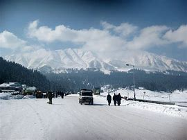

-
Maa vaishno Devi Temple
The Vaishno Devi Temple is an important Hindu temple dedicated to Vaishno Devi located in Katra at the Trikuta Mountains within the Indian Union territory of Jammu and Kashmir. The temple is one of the 108 Shakti Peethas dedicated to Durga, who is worshipped as Vaishno Devi. It is one of the most visited pilgrimage centers of India.

-
Srinagar
Srinagar was founded more than 2000 years ago, around the 3rd century BC, by King Pravarasena and it is most tourist in kashmir

-
Dal lake
Dal is a lake in Srinagar, the summer capital of Jammu and Kashmir, India. It is an urban lake, the second largest lake in Jammu and Kashmir, and the most visited place in Srinagar by tourists and locals.

-
Gulmarg
Gulmarg is popular for skiing destination and a notified area committee in the Baramulla district in the Indian union territory of Jammu and Kashmir.

-
Pari Mahal
Pari mahal also known as The Palace of Fairies, is a seven-terraced Mughal garden located at the top of Zabarwan mountain range, overlooking the city of Srinagar and the south-west of Dal Lake in the Indian union territory of Jammu and Kashmir.

-
Betaab Valley
Betaab valley, originally called as Hajan Valley or Hagan Valley, is situated at a distance of 15 km (9.3 mi) from Pahalgam in the Anantnag district in India's union territory of Jammu and Kashmir.